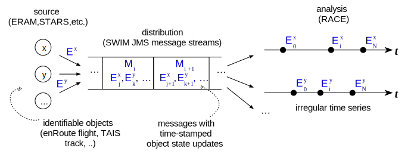
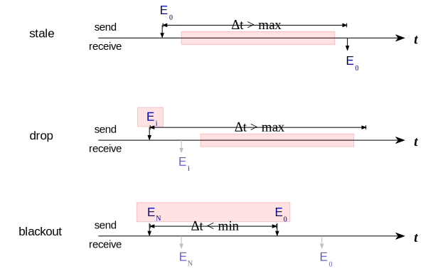

Time Series Analysis
One of the primary use cases of RACE is to analyze streams of timed events such as flight position updates received via SWIM XML messages. Typically, such messages bundle updates for any number of objects (e.g. flights), each update object contains its own time stamp (e.g. position time). Messages are received from the same server through the same network connection and hence have a total order over time.

Both messages and update objects represent irregular time series that can be analyzed separately with respect to
- statistics (such as average and peak rate) and
- anomalies (ordering, syntactic and semantic consistency)
Analysis results have to support different output formats such as console output, XML files or HTML documents.
Since this applies to a large number of messages and update object types, and needs to be extensible in terms of specific message/object type processing, RACE provides generic infrastructure to support such analysis and reporting.
This infrastructure revolves around 6 constructs: update objects, TSStatsCollector, TSEntryData,
TSStatsData, Stats and StatsReporter.
update object is just a term for a Dated object we want to reason about (such as FlightPos).
TSStatsCollector is typically an actor which is responsible for collecting statistics and
analysis results for a specific update object type. To that end, it internally uses two generic
data structures to collect results: TSEntryData and TSStatsData. Both take the
update object type as a type parameter in order to support specific processing in sub-classes.
TSStatsCollector itself is a generic type that takes four type parameters:
- K: a key type to identify update objects, which is usually a String (e.g. call sign for flights)
- O: the update object type (e.g.
FlightPos) - E[O]: the concrete
TSEntryDatatype - S[O,E]: the concrete
TSStatsDatatype
TSEntryData is the structure to store analysis data for update object entities (such as the
flights represented by FlightPos objects). This can involve strictly internal data which is
only used to periodically compute statistics.
TSStatsData is the structure that represents the data to report. This is typically a ephemeral data structure that is constantly updated (e.g. number of update objects processed), and is used to create invariant snapshots of the reporting data at a configured collection interval.
Stats is the invariant report data that is sent out by the TSStatsCollector. In addition to the statistics/analysis data itself it contains the time stamp at which the data was taken, and a configurable topic name that can be used to identify the particular report.
StatsReporter finally is an actor that subscribes to channels on which it receives Stats
(report) data. The StatsReporter is responsible for creating the actual report, which involves both
output (e.g. console, HTML) and report type (e.g. TATrackStats) specific formatting.
Reporting time can be different than collection time. The StatsReporter stores incoming Stats
objects (which are invariant and have a generation time stamp) under their respective topic. At
the scheduled report time it generates the output from the received Stats objects by calling the
abstract report() method that has to be provided by the concrete StatsReporter. This method
can do the formatting itself, or - typically - use pattern matching on the Stats object types
to delegate it to respective subtypes such as TATrackStatsCollector.
Analysis
Off the shelf, RACE includes classes to collect general statistics such as
- total number of entity updates since start
- current number of live entities (e.g. active flights)
- min/max number of live entities since start
- min/max and average update interval since start
This can also include histogram data if finer update rate information is needed.
Since the analyzed data represents time series, RACE also provides statistics about a number of general temporal anomalies that fall into two categories: order based and duration based
Order Anomalies
This category refers to the ordering in which update events for the same entity are generated and received.
out-of-order means events are received in reverse order of creation, i.e. without respective precautions clients could overwrite more up-to-date data with older data, or compute negative time differences.
ambiguity anomalies are cases in which update events have the same time stamp but otherwise different data values such as positions. This is more serious because clients usually cannot resolve such ambiguities easily.
duplicates are cases in which different update events carry the same time stamp and the same data. This is normally more a bandwidth problem at the message level, e.g. by reporting the same sensor reading twice (e.g. from different stations). Clients still have to be aware of zero time deltas in case they compute rates.

Duration Anomalies
Such anomalies involve the duration between the time an event was generated (time stamp) and the time it is received.
stale anomalies are update events that are received at a time when the data is already assumed to be outdated
dropped anomalies represent cases in which live entities have not been updated for a duration that exceeds the expected update interval
blackout anomalies are cases where entities that were previously reported as completed (e.g. a flight that has landed) re-appear within a given blackout duration, which means either the completion event was erroneous, or there is a potential problem with the re-use of entity keys such as call signs or track numbers.
